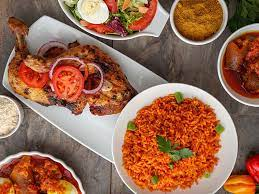

Jollof Rice

Spiced and stewed in a flavorful tomato broth, it is everything from "everyday" to celebration. The classic version is cooked with long-grain rice (Uncle Ben's/Carolina's) and seasoned with Nigerian-style curry powder and dried thyme. Served with fried, ripe plantains which we call dodo and coleslaw, it is everything.
Ingreidents
- 1/3 cup (vegetable/canola/coconut, not olive oil)
- 6 medium-sized fresh plum/Roma tomatoes, chopped, OR a 400-gram tin of tomatoes
- 3 medium-sized red onions (1 sliced thinly, 2 roughly chopped), divided
- 1/2 to 1 hot pepper, or to taste (yellow Scotch bonnets are my favourite)
- 3 tablespoons tomato paste
- 2 teaspoons (Caribbean/Jamaican-style) curry powder
- 1 teaspoon dried thyme
- 2 dried bay leaves
- 5 to 6 cups stock (vegetable, chicken, or beef) or water, divided
- 4 cups uncooked converted long-grain rice or golden sella basmati, rinsed Salt, to taste
- Extra: sliced onions, tomatoes
Recipe
- In a blender, combine tomatoes, red poblano (or bell) peppers, chopped onions, and Scotch bonnets with 2 cups of stock, blend till smooth, about a minute or two. You should have roughly 6 cups of blended mix. Pour into a large pot/ pan and bring to the boil then turn down and let simmer, partly covered for 10 - 12 minutes.
- In a large pan, heat oil and add the sliced onions. Season with a pinch of salt, stir-fry for 2 to 3 minutes, then add the bay leaves, curry powder and dried thyme and a pinch of black pepper for 3 - 4 minutes on medium heat. Then add the tomato paste - stir for another 2 minutes. Add the reduced tomato-pepper-Scotch bonnet mixture, stir, and set on medium heat for 10 to 12 minutes till reduced by half, with the lid partly on. This is the stew that will define the pot.
- Add 4 cups of the stock to the cooked tomato sauce and bring it to boil for 1 - 2 minutes.
- Add the rinsed rice and butter, stir, cover with a double piece of foil/baking or parchment paper and put a lid on the pan—this will seal in the steam and lock in the flavor. Turn down the heat and cook on the lowest possible heat for 30 minutes, stirring half way through.
- Stir rice—taste and adjust as required. If rice isn't soft enough/ needs additional cooking, add 1/4 to 1/2 cup of stock or water, stir through and continue to steam, on low till cooked through.
- If you like, add sliced onions, fresh tomatoes and the 2nd teaspoon of butter and stir through. Let rest, covered for 5 to 6 minutes.
- To make Party Rice, you'll need one more step. Now Party Rice is essentially Smoky Jollof Rice, traditionally cooked over an open fire. However, you can achieve the same results on the stove top. Here's how: Once the rice is cooked, turn up the heat with the lid on and leave to "burn" for 3 to 5 minutes. You'll hear the rice crackle and snap and it will smell toasted. Turn off the heat and leave with the lid on to "rest" till ready to serve. The longer the lid stays on, the smokier. Let the party begin!